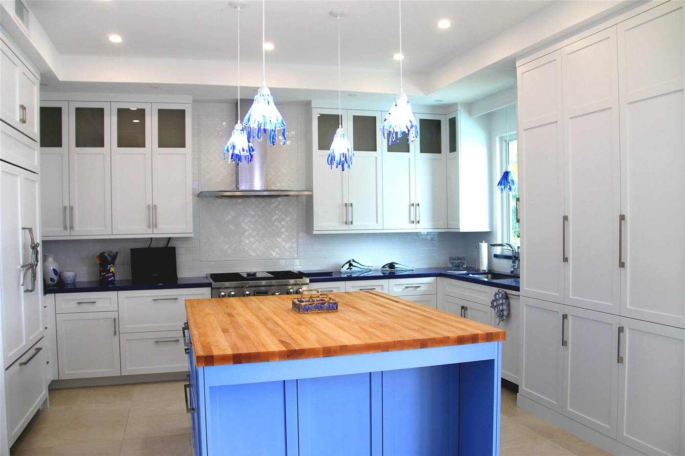
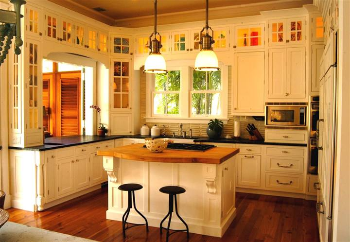
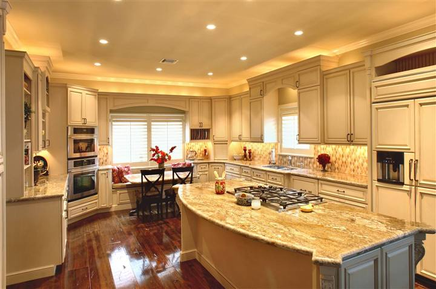

Built on the island · Finished by hand
Beautifully finished.
Ready for your next kitchen.
Custom-sized cabinetry built and finished in Key West for your design, your door style and your finish, then shipped by freight ready to assemble. The same cabinets that go into some of South Florida's finest homes, without a finishing shop on your end.

Your design. Your style. Made in Key West.
We build the cabinets for your design, not your design around stock cabinets.
Bring custom-cabinet craftsmanship to your next project. Choose your dimensions, door style, wood and finish. We build and finish the cabinet package in Key West so your team can concentrate on assembly, installation and delivering a beautiful finished kitchen.
Key West style means full-access construction with no face frame in the way: wider drawers, easier reach, clean ⅛″ reveals. It does not mean one fixed look. You still pick the door, the stile detail, the species and the color.
How a project works
Send us your drawings. We'll price the details.
You don't have to configure every cabinet to get started. Send your plans, dimensions and your door, wood and finish direction. We return cabinet pricing, destination freight and numbered detail drawings for your review and sign-off before anything goes into production.
Send drawings
Plans, elevations or a sketch with dimensions, plus appliance specs and your finish direction.
Pricing + numbered drawings
Cabinet pricing, freight to your destination, and numbered detail drawings showing every cabinet, size and detail.
Sign off
Review, mark changes, sign. Nothing is cut until the drawings are approved.
Built, finished, shipped
Finished in Key West, packed on a consolidated pallet, and shipped by freight to your job or shop.
Quality inside. Beautifully finished outside.
Built to the same standard as our custom work.
Every Key West Kitchens box comes off the same CNC and out of the same finish room as Hansen & Bringle's full-custom kitchens.
| Cabinet boxes | Full ¾″ American-made maple plywood, pre-finished interior. |
|---|---|
| Base construction | Full tops on base cabinets, with project-specific openings detailed on the approved drawings. |
| Cabinet system | Full-access Key West–style construction, no face frame. |
| Custom sizing | Width, height and depth to your design in 1/16″ increments, within each configuration's manufacturing limits. |
| Finished appearance | Consistent ⅛″ reveals between doors and drawer fronts after installation and final adjustment. |
| Drawers | ⅝″ maple dovetail drawer boxes. |
| Hardware | Blum hinges and drawer guides, soft close, with exact hardware and accessories listed in the approved package. |
| Finish & assembly | Professionally finished before shipment; precision-machined, doweled and pre-drilled components ready for assembly. |
More time building. Less time unboxing.
Everything ships by freight, packed for the project.
Your cabinet components arrive organized on one large consolidated pallet with like parts grouped together. Box-assembly fasteners come in one bag of dowels and one bag of screws, not a separate hardware pack for every cabinet.
Spend your time assembling the kitchen, not opening a separate carton and three bags for every unit. Oversized projects may take additional pallets; the shipment size is confirmed on your quote.
Freight comes into Key West every day to supply the island. Those trucks need a return trip. That's how a true Key West–made product ships off the island at a price that works.
Our work
Kitchens built in this shop.
Completed Hansen & Bringle projects in the Florida Keys. Same construction, same finish room, same people.


Trade partners
Built for the professionals who build kitchens.
Cabinet shops adding a finished line without adding a finish room. Builders, remodelers, designers and installers who want a custom-sized package while they focus on the client and the install. Qualified new dealers entering the category with a shop behind them.
Homeowners are welcome to explore the kitchens, doors and finishes here. Pricing and ordering run through your cabinet professional, designer or installer, and we're glad to connect you with one.